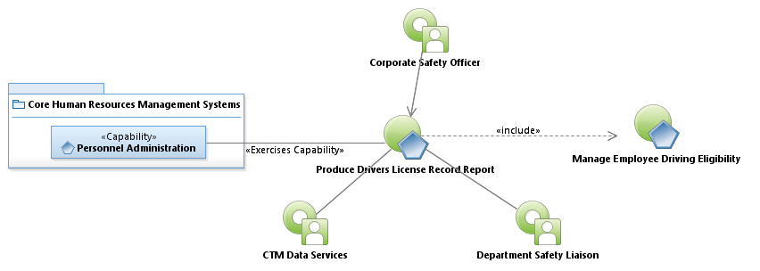
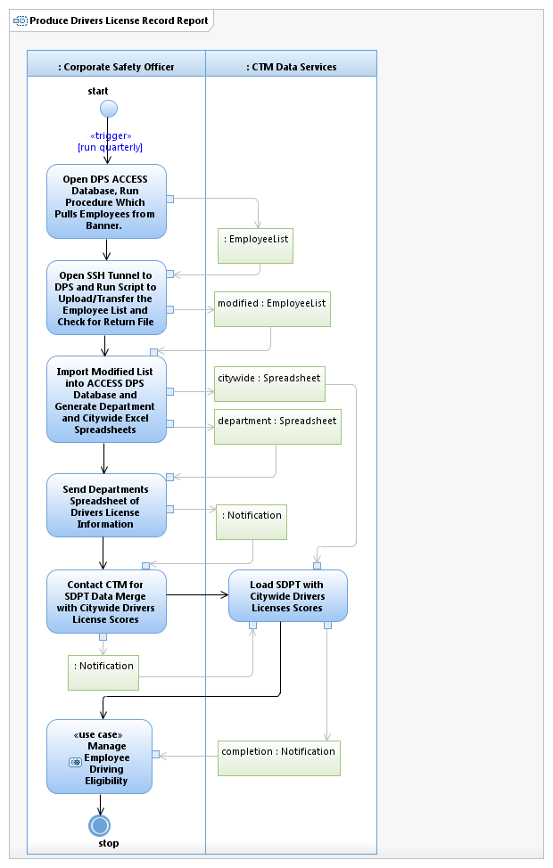

Use Case Model: Produce Drivers License Record Report
Architect: Aaron Brown, IT Enterprise Architect Senior
Date Last Modified: 03/14/2013
User Review: Kieth Land, Linda Lazo
Date: 3/14/2013
Produce Drivers License Record Report indicating quarter and year to date "loss" in terms of workers compensation claims, property claims, and vehicle repair costs. This report is shared with Department Directors, City Manager and Assist City Manager, HR and Safety Liaisons, AFSCME (American Federation State county municipal employees) and Employee Safety Association members.
Follow link to Role Definitions

Use Case Model: Produce Drivers License Record Report

Activity Model: Produce Drivers License Record Report